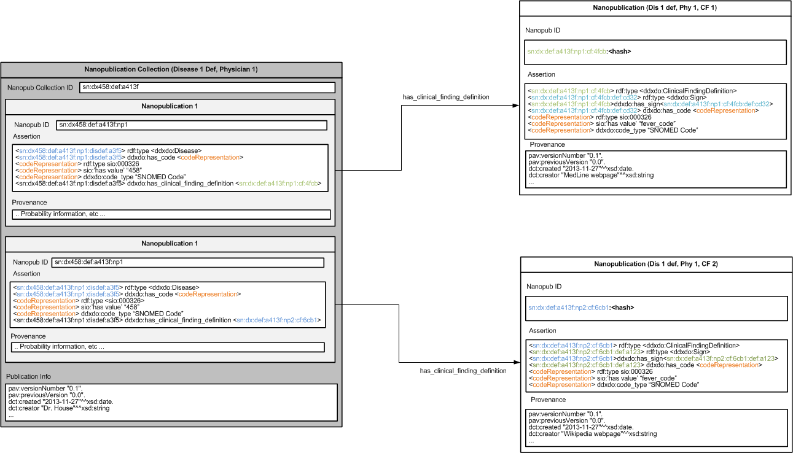
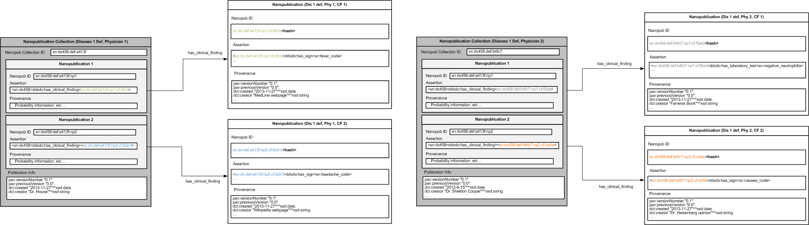
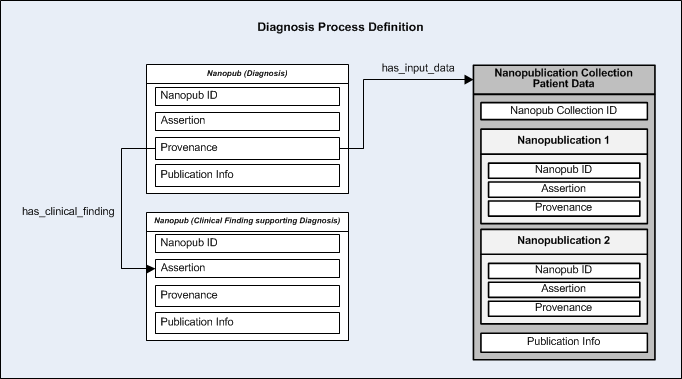
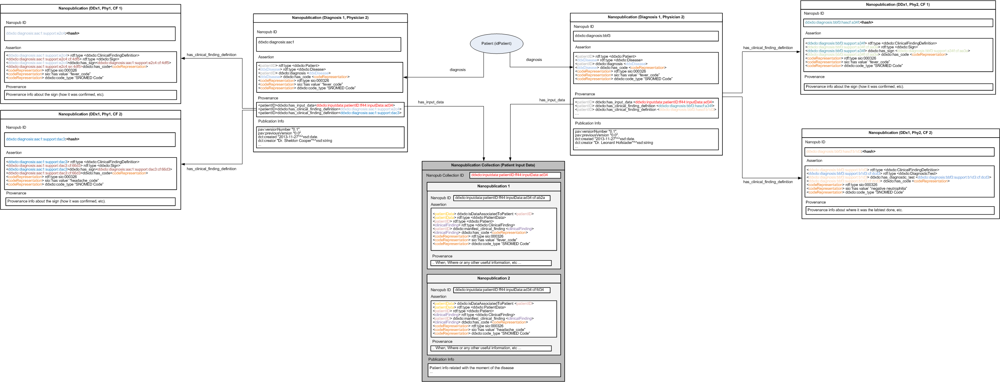

Introduction
DDx2NP framework is an API oriented to the generation of nanopublications of diagnosis knowledge bases
schemas or diagnosis results. It allows, for a concrete knowledge base or
diagnosis source information, the creation of the associated nanopub following
the diagnosis nanopub model.
Diagnosis nanopub model
The Diagnosis nanopub model has been created to provide a reference model to
store clinical diagnosis knowledge using nanopublications. The model is divided
in two submodels: Diagnosis Knowledge Base Definition Model and
Diagnosis Process Definition Model. In order to link the different
entities that are represented in both models, as part of the semantic
representation we make use of the Diagnosis Definition Ontology (DDxDO), which
can be consulted in more detail here.
Diagnosis Knowledge Base Definition Model
The Diagnosis Knowledge Base
Definition Model (DKBD Model) has been created to provide a real structure about
how the diagnostic criteria of the diseases are conformed, also known as
Diagnostic Criterion Model (DCM) [1]. DKBD uses the DCM model as a way to create
relations between the disease and the associated criteria (clinical findings).
The basic representation of this model, using DDxDO to create the relationships,
can be seen on the following Figure:
The definition of a disease is the definition done by a physician/system about
a disease in a concrete moment. For each disease-physician/system pair several
definitions could exist, based on several factors (that should be reflected in
publication info data). This schema allows having multiple definitions of a same
disease made by several physicians or systems. In the left part of the schema we
have a nanopublication collection to define a disease. This nanopublication
collection is linked with other nanopublications through the
has_clinical_finding relationships, following the DCM model. The nanopublication
collection is a set of nanopublications with shared publication info. Each
nanopublication inside the nanopublication collection has a set of assertions
and provenance data that makes reference to the entire nanopublication. In the
model, each nanopublication which belongs to the nanopublication collection
contains information about the clinical finding that has been asserted to “be
part” of the disease. In the assertion part of the nanopublication, we will have
a definition of this relation through the has_clinical_finding relation, being
the object (or end) of this relation, the nanopublication that is out of the
collection. Provenance data will contain information regarding the assertion of
the nanopublication of the nanopublication collection. On the other hand, the
nanopublications that are out of the nanopublication collection contain more
specific data about the clinical finding. Basically, they can contain different
types of relations with the finding (has_sign, has_diagnostic_test,
has_disorder, etc…) depending the type of clinical finding, and other provenance
information regarding this relation. The following figure shows a more detailed
example of this model; we can see a hypothetical example of a disease definition
using this model:

As can be seen in this figure, we have the definition of disease sn:458/>/(sn stands for SNOMED namespace). In the nanopub collection we have/>/included two nanopubs. The second one (sn:dx458:def:a413f:np2) is a nanopub/>/that contains an assertion about the clinical finding that has been described/>as /“part of” the disease, in this definition (def:a413f). The relation points/>to /the nanopub “sn:dx458:def:b4fc7:np2:cf:cd4e” through the/>has_clinical_finding /relation. In the provenance section, we have some/>information regarding this /assertion in this context. Imagine for example that/>the physician that /describes these relationships (Dr. Sheldon Cooper, as/>publication info showed /up), said that the probability of manifesting the/>clinical finding “cd4e” /(which is nausea and vomiting if we check/>nanopublication /sn:dx458:def:b4fc7:np2:cf:cd4e) in sn:dx458 is 80%. This/>information will be /added in the provenance of this nanopublication. On the/>right side, we have the /nanopublications that contain the real information/>about the findings pointed /by the nanopublications of the nanopublication/>collection. In the assertion /section, we have the relation with the type of/>clinical finding (for example, /in sn:dx458:def:b4fc7:np2:cf:cd4e the relation/>is has_sign), and the clinical /finding itself (nausea). Additional provenance/>information the sign will be /added in provenance section. Finally, the/>following figure shows the definition /of the same disease performed by two/>different physicians following DKBD Model:

Diagnosis Process Definition Model
The DiagnosiseProcesshDefinitioneModel (DPD Model) has been created with theoaimoofestoringhinformation about theediagnosis performed by physiciansoorodiagnosticesystems,hincluding informationethat will allow to keep aotrackingoabout theediagnostichprocess, includingeinformation about how aophysician or aosystemereaches ahdiagnosis. The basicerepresentation of the DPDomodel can beoseen onefigure 4.

In this model, we have a nanopublication collection which represents thehinputhdata of the patient. In this collection all the findings that thehpatienthmanifested and should be considered in the diagnosis process arehmanifested. Onhthe other hand, we have a nanopublication for each diagnosedhdisease. If ahphysician or system reaches the decision that several diseaseshcan be thehdiagnostic result, one nanopublication per disease should be created.h Thehnanopublication which contains the diagnosis has the following elements:hh- Assertion: In the assertion section there is a triple that relateshthehpatienth (using the patient ID [subject]) with the proposed diseaseh[object]hthrough the diagnosis relation from the DDxDO ontology.
- Provenance: Provenance data provides information about how thistdiagnosistwas reached. First of all, it has direct references to thetnanopublicationtcollection that contains the data about the patient in order tottrack where thetclinical findings of the patient came from.
Provenance also contains information about what findings help the physicianiorisystem to reach the diagnosis. It contains several triples that linkitheidiagnosis nanopublication with the supporting nanopublications throughitheihas_clinical_finding relation, being the subject the patient ID and theiobjectithe supporting nanopublication. The supporting nanopublicationsicontainiinformation about the finding which helps to reach the diagnosis.iAssertioniprovides triples about what finding was considered (in a positive orinegativeiway) to perform the diagnosis. Provenance information can contain anyiother datairelevant to the finding such as how it was confirmed. A workingiexample of theischema with two hypothetical diagnoses for a same input data isishown asifollows:

How to create nanopubs for a concrete diagnosis model
The API has been designed and developed trying to be as standard, flexible and robust as possible.
However, if you want to convert your diagnosis knowledge base to nanopublications following the schema proposed by
DDx2NP with DDxDO ontology you need to adapt your data. Current version requires some tricky code development to work,
but we are working on its improvement. It is important to notice that the current version is limited to a set of provenance
and publication data info. This means that the vocabularies and properties used are built-in in the current version of the code.
If you want to include new data, you have to re-code basis of DDx2NP. Regarding this, two problems emerge:
- Source: Where is your data stored? This is the first important question. Maybe your data is stored on an ontology with its own schema.
Maybe you have your data on a database or in plain text files with your own format/schema. Given this situation, you have to create your
own code to extract all your knowledge from your source, creating objects that can be manipulated by DDx2NP.
- Data: The structure of your data is the first Problem. Maybe you have a concrete model to store your diagnosis information.
based on your requirements and hence, the relations differ to the ones proposed by DDx2NP. The second problem is the data itself.
We don’t know what information/knowledge you have. And more important, we don’t know what you want to convert to nanopub or dismiss.
Given this situation, the creation of nanopublications from your data source is not an easy task. It will not be difficult, but.. Neither easy.
The best approach that we recommend to follow is to check the samples provided by the API. In the samples, you have two packages:
es.cbgp.upm.ddxotn.samples.oddx.kbgen
ODDx [1-4] is the legacy diagnostic system that we have used as an example. It contains a knowledge base about diseases and their associated findings using
DCM model. We have created a set of classes that allows extracting the information from the ODDx platform and converting it to nanopublications using the DKBD
model. This package contains the following classes:
- Disease: It is a small object which contains basic information about a disease such as name, ID (Snomed ID) and description.
- Physician: It is a small object which contains basic information about the physician which designs the diagnostic criterion of the disease. In this case,
only contains the name, but more data could be added.
- ODDxKBDataExtractor: This class is in charge of loading all the data from the source. In this case, it extracts the diseases of the knowledge base from a separate
text file along the name, snomed code and description. Once the disease objects have been created, it gets the relation with other findings from the ODDx
ontology [5] and processes each disease in order to generate the associated nanopub.
- ODDxKBNanopubCollection: In the nanopub version of the knowledge base each disease is represented by a nanopub collection. This class, which extends from
NanopubCollection class of DDx2NP API, currently, forces to implement one method: createPublicationInfoQuads. This method is in charge of creating the
publication info quads. Basically, you have to create the quads (using createQuad method) of the publication info data. The quads that can be created are
limited to the information available in DDx2NP API unless you modified the code.
- ODDxKBNanopub: In the nanopub version of the knowledge base each clinical finding is represented by a nanopub. This class, which extends from Nanopub class
of DDx2NP API, currently, forces to implement these methods:
- createAssertionQuads: This method allows to create the assertion quads. Any assertion can be added.
- createProvenanceQuads: This method allows to create the provenance quads. Provenance are limited to the information available in DDx2NP API.
The second package available in the samples is the diagnosis package:
es.cbgp.upm.ddxotn.samples.oddx.diagnosis
The behavior is similar. We have the following classes:
- ClinicalCase: Clinical Case class represents a hypothetical clinical case. It contains information about the patient and the diagnoses reached.
- Patient: This class contains information about the patient (signs and diagnostic tests as clinical findings) and the ID.
- Diagnosis: The diagnosis contains information about the diagnosed disease and the physician or system which perform it.
- ODDxDiagnosisDataExtractor: This class is in charge of load all the data from the source. In this case, it extracts all the data from a set of files
which contains information about each clinical case (input findings manifested by the patient, and the diagnoses made by different physicians and the
evaluated system).
- ODDxDiagnosisNanopubCollection: In the diagnosis process a nanopubcollection is used to store patient input data. Each nanopub included in this
collection contains information about the findings manifested by the patient with attached provenance information. As in the previous case, this
class extends from NanopubCollection and is forced to implement createPublicationInfoQuads method.
- ODDxDiagnosisNanopub: In the diagnosis process, this nanopub is used to store information about:
- Information about the findings manifested by the patient.
- Diagnosis performed.
- Findings supporting the diagnosis.
Following the samples provided in the API it is possible to create personalized classes to create your own nanopubs associated to your diagnosis schema.
[1] Rodríguez-González, A. and Alor-Hernandez, G. (2013). An approach for solving multi-level diagnosis in high sensitivity medical diagnosis systems through the application of semantic technologies. Computers in Biology and Medicine 43(1), pp. 51-62.
[2] García-Crespo, A., Rodríguez-González, A., Mencke, A., Gómez-Berbis, J.M., Colomo-Palacios, R. (2010). ODDIN: Ontology-driven differential diagnosis based on logical inference and probabilistic refinements. Expert Systems With Applications 37(3), pp. 2621-2628
[3] Rodríguez-González, A., Labra-Gayo, J.E., Alor-Hernandez, G., Gomez-Berbis, J.M., Posada-Gomez, R. (2009). ADONIS: Automated Diagnosis System based on Sound and Precise Logical Descriptions. 22nd IEEE International Symposium on Computer-Based Medical Systems
[4] Rodríguez-González, A., Labra-Gayo, J.E., Colomo-Palacios, R., Mayer, M.A., Gomez-Berbis, J.M., García-Crespo, A. (2012). SeDeLo: using semantics and description logics to support aided clinical diagnosis. Journal of Medical Systems 36(4), pp. 2471-2481
[5] Rodríguez-González, A., Hernandez-Chan, G., Colomo-Palacios, R., Gomez-Berbis, J.M., Garcia-Crespo, A., Alor-Hernandez, G., Valencia-Garcia, R. (2012). Towards an Ontology to Support Semantics Enabled Diagnostic Decision Support Systems. Current Bioinformatics 7(3), p.. 234-245